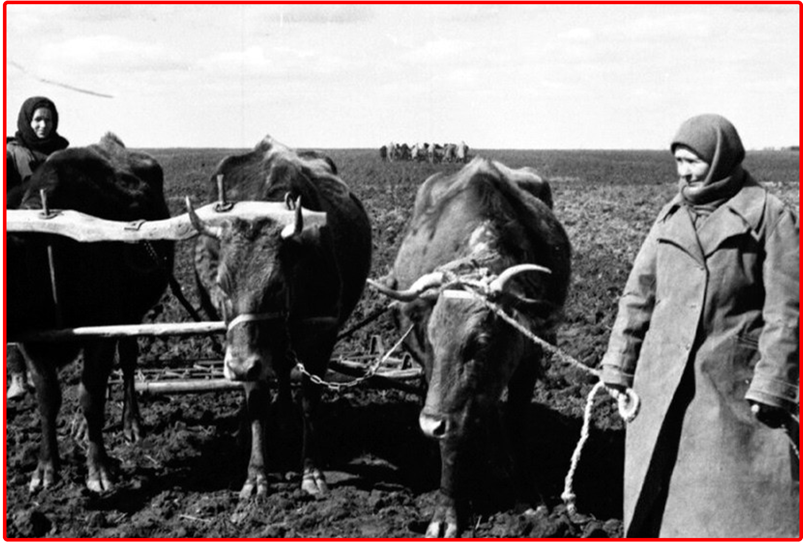
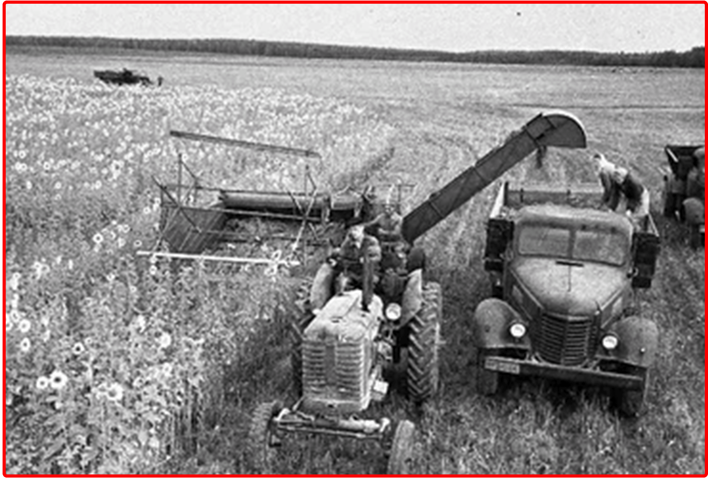
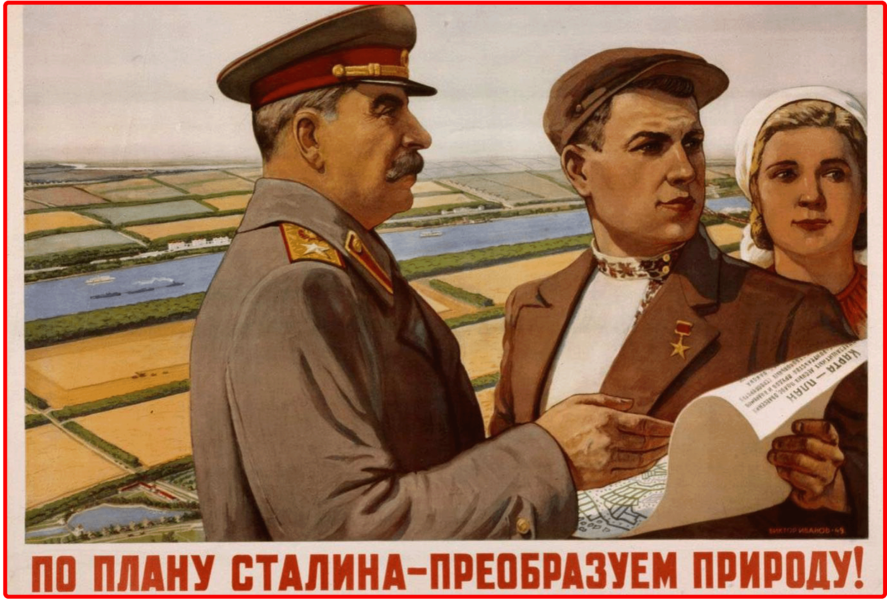

Пле́нум ЦК КПСС — пленарное заседание членов и кандидатов в члены Центрального комитета Коммунистической партии Советского Союза, высшего партийного органа СССР, проходящее в период между съездами КПСС.
Совет Министров СССР — высший коллегиальный орган исполнительной и распорядительной государственной власти Союза Советских Социалистических Республик.

ГОЛОД 1946-1947г.
Первый послевоенный сельскохозяйственный год выдался крайне неблагоприятным по природно-климатическим условиям, поскольку летом 1946 г. сильная засуха, охватившая степную часть, юг Украины, Молдавию, Нижнее Поволжье, а в Сибири и на Дальнем Востоке серьезный труд гущему урожаю, напротив, нанесли затяжные проливные дожди. В результате этих природных аномалий валовой сбор зерновых культур в два с лишним раза оказался ниже, чем в предвоенном 1940 г., и уже в августе — сентябре 1946 г. на централизованное государственное снабжение было переведено около 88 млн граждан страны. Однако избежать острого кризиса так и не удалось, и начавшийся голод привёл к гибели почти 770 тыс. человек и вызвал массовый отток сельского населения страны во многие близлежащие посёлки городского типа, районные центры и ряд крупных городов. Крайняя острота продовольственной проблемы была снята лишь сравнительно неплохими урожаями 1947–1948 гг., а также политикой снижения цен, которую сталинское руководство стало проводить сразу после успешной реализации денежной реформы 1947 г.

РАЗВИТИЕ СЕЛЬСКОГО ХОЗЯЙСТВА
Между тем, руководство страны обратило особое внимание на положение дел в колхозной деревне. Именно поэтому уже в феврале 1947 г. выходит постановление «О мерах по подъему сельского хозяйства в послевоенный период», а затем, де-факто, повторяющее его постановление пленума ЦК ВКП(б) в октябре того же года. В соответствии с этими решениями, расширилась работа по электрификации села и т.д. Все предпринятые меры позволили уже к концу 4-й пятилетки создать свыше 1000 новых МТС и существенно обновить материально-техническую базу сельскохозяйственного производства. К концу 1950 г. количество тракторов и зерноуборочных комбайнов в МТС возросло примерно на 50%, а принятый правительством план развития сельской электрификации позволил подключить к электроснабжению 15% колхозов, 76% совхозов и почти 80% МТС.

ПЛАН ПРЕОБРАЗОВАНИЯ ПРИРОДЫ
В октябре 1948 г. Совет Министров СССР и ЦК ВКП(б) приняли знаменитое Постановление «О плане полезащитных лесонасаждений, внедрении травопольных севооборотов, строительства прудов и водоёмов для обеспечения высоких и устойчивых урожаев в степных и лесостепных районах европейской части СССР». В советской печати эта не имеющая аналогов в мировой практике пятнадцатилетняя программа (1949–1964) научного регулирования природных процессов, разработанная на основе трудов ряда выдающихся русских агрономов, совершенно справедливо была названа «Великим сталинским планом преобразования природы», поскольку её инициатором стал именно вождь всех времён и народов. Суть этого «Сталинского плана» состояла в его комплексной систематике и масштабности, поскольку всего за 15 лет предполагалось создать 8 крупных государственных лесозащитных полос общей протяжённостью свыше 5300 километров, высадить защитные лесонасаждения общей площадью 5,7 млн гектаров и соорудить в колхозах и совхозах страны более 44200 прудов и водоёмов. Всё это в соединении с передовой советской агротехникой должно было обеспечить высокие, а главное, устойчивые, не зависящие от капризов природы урожаи зерновых культур на площади свыше 120 млн гектаров пашни. Главной целью данного плана было предотвращение перманентных засух, жарких юго-восточных суховеев, песчаных и пыльных бурь путём строительства тысяч водоёмов, посадки лесозащитных насаждений и широкого внедрения травопольных севооборотов в южных регионах СССР, прежде всего в Среднем и Нижнем Поволжье, в Западном Казахстане, на Северном Кавказе и на Юго-Восточной Украине. Всего планировалось высадить более 4 млн га леса и восстановить старые леса, уничтоженные либо в годы войны, либо нерадивым хозяйствованием прежних артельных лесоводов. Кроме государственных лесозащитных полос высаживались лесополосы местного значения, проходившие по периметру отдельных полей, по склонам оврагов, вдоль уже существующих и вновь создаваемых водоёмов на песках и т.д. Помимо этого, внедрялись более прогрессивные методы обработки полей путём применения чёрных паров, зяби и лущения стерни, внесения в почву органических и минеральных удобрений, посева отборных семян высокоурожайных сортов, приспособленных к местным условиям и т.п. К концу 4-й пятилетки первые мероприятия по реализации этих грандиозных планов привели к существенному росту урожайности зерновых хлебов на 25–30%, овощей — на 50–75%, а кормовых трав — на 100–200%. Также в результате значительного роста общих капиталовложений в сельское хозяйство страны и улучшения технической оснащённости многих колхозов и совхозов удалось создать прочную кормовую базу для развития животноводства, в результате чего всего за три года производство мяса и сала возросло на 80%, в том числе свинины — на 100%, производство молока — на 65%, яиц — на 240%, шерсти — на 50% и т.д.
ВОССТВНОВЛЕНИЕ СЕЛЬСКОГО ХОЗЯЙСТВА БССР
Сельское хозяйство Белоруссии было практически уничтожено войной.Ключевой задачей было восстановление довоенных показателей любой ценой. Это достигалось за счет:
-Административного давления: Восстановление и укрупнение колхозов, борьба с «расхитителями колхозной собственности».
-Материальной поддержки:Возвращение и завоз новой техники через МТС (к 1950 г. парк тракторов и комбайнов превысил довоенный уровень), поставки племенного скота.
-«Сталинский план преобразования природы»: В БССР он выразился в масштабной мелиорации Полесья, осушении болот и создании новых сельхозугодий, а также посадке лесополос.К 1950–1952 посевные площади и поголовье скота восстановлены и немного превысили довоенный уровень,cоздана более мощная материально-техническая база (МТС), началось внедрение агротехнических новшеств,но урожайность зерновых была одной из самых низких в СССР, труд оставался ручным.